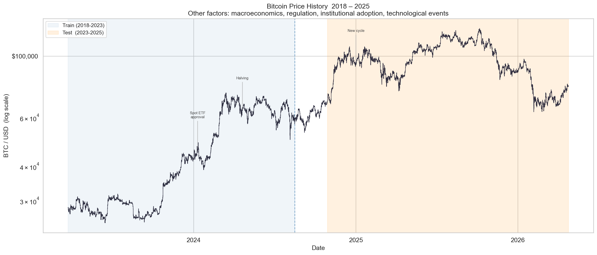
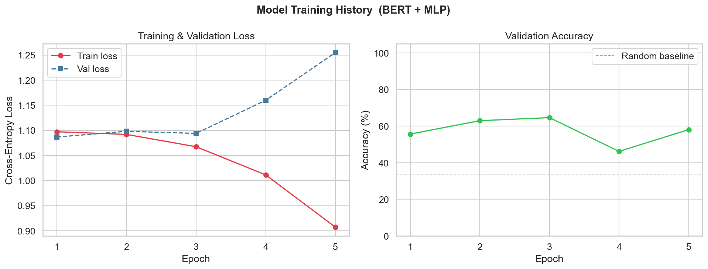
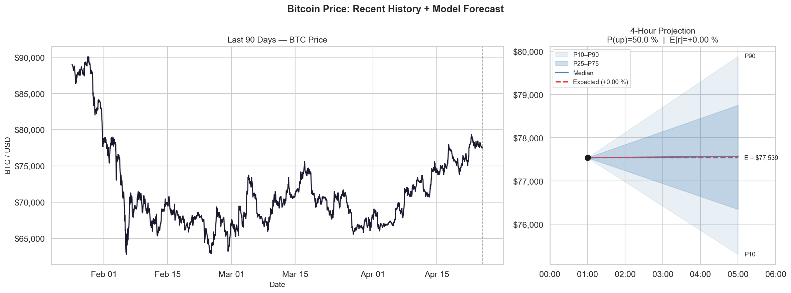
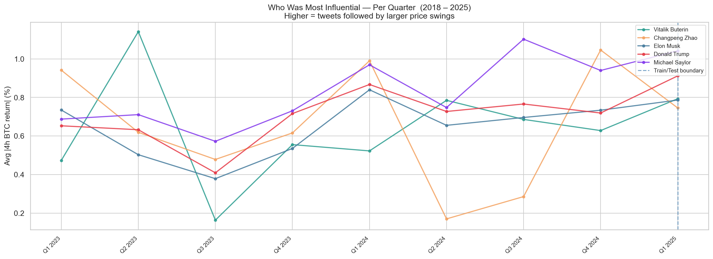
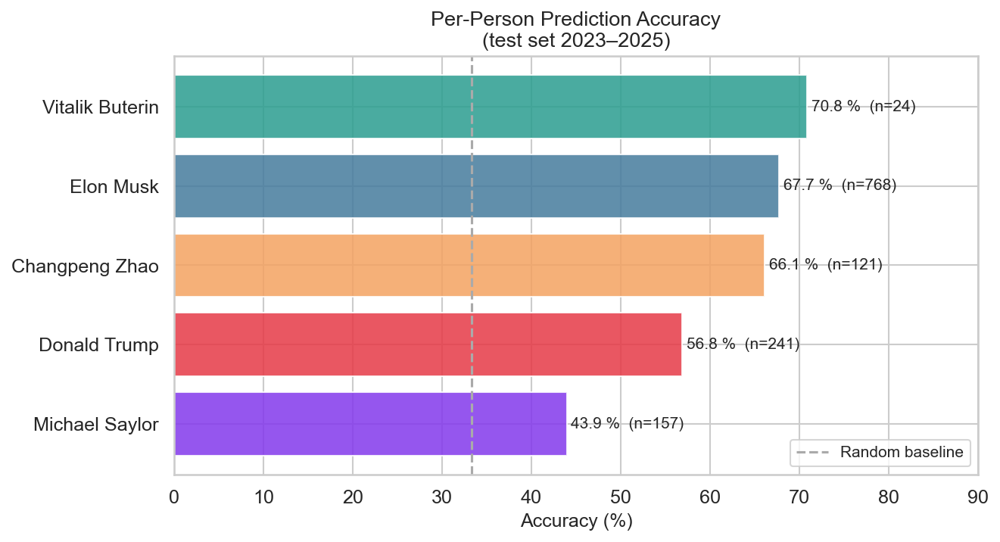
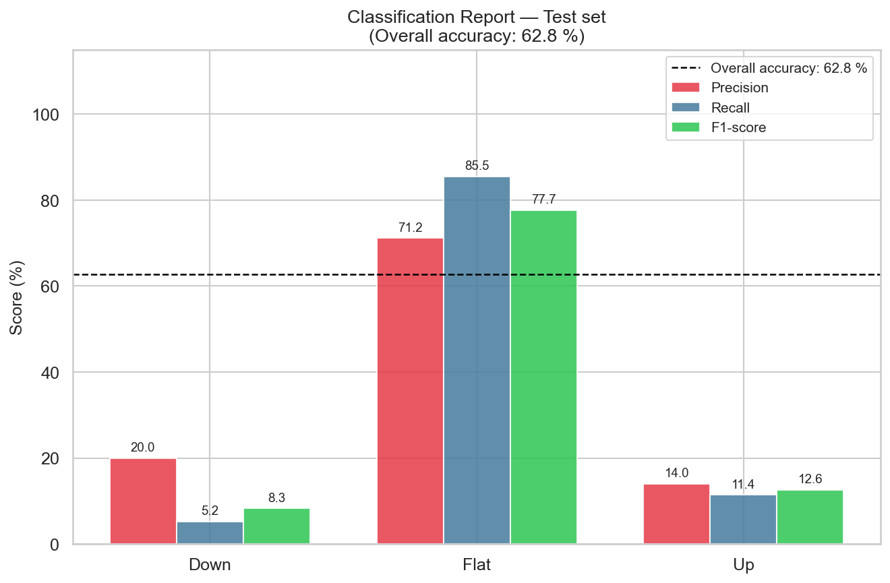

Crypto Whisperers:Do the Internet’s Loudest Voices Move Bitcoin?
Abstract
In 2021, Elon Musk added ‘#bitcoin’ to his Twitter bio. Bitcoin jumped 20% in hours. We live in an era where social media has given a handful of individuals the ability to shape market expectations in real time. Cryptocurrency, with no central bank and no earnings reports, is uniquely hypersensitive to sentiment and influence. We ask whether the public statements of five such figures contain a consistent, learnable signal about the direction of Bitcoin prices. Our project explores this question by fine-tuning BERT on labeled tweet data from January 2018 through December 2025, paired with a two-layer MLP classifier, to predict whether Bitcoin’s price moves up, down, or stays flat in the 4 hours following a post. While prior work has focused on aggregate social media sentiment, we shift attention to individual voices, introducing a “historical influence weight” for each figure derived from their average absolute impact on Bitcoin returns in the hours following a post. Who is speaking, we argue, matters as much as what is being said.
The Case for Studying Influence in Crypto Markets
On October 31st, 2008, Satoshi Nakamoto published “Bitcoin: A Peer-to-Peer Electronic Cash System,” outlining a method for “online payments to be sent directly from one party to another without going through a financial institution” (Nakamoto). Built on cryptography and a decentralized network, it eliminated the need for a bank as an intermediary entirely. It launched on January 3, 2009, becoming the first successful digital currency (Royal).
In the two decades since, Bitcoin has grown from a nine-page whitepaper into a trillion-dollar asset class. The first recorded transaction of Bitcoin priced it at less than one-tenth of one cent (Royal). Now, Bitcoin trades at tens of thousands of dollars, and surpassed the $100,000 mark in early December 2024 (Quiroz-Gutierrez). Along the way, the forces that move its price have remained stubbornly difficult to pin down. Unlike traditional assets, it offers no earnings, no dividends, and no central bank guidance to model from. Even news coverage, which reliably moves stock prices, appears to offer little traction here. A study of over 63,000 headlines from CoinDesk, one of the cryptocurrency industry’s leading news publications, spanning 2014 to 2025 found no evidence that news coverage predicts Bitcoin’s daily price movements (Robson). The researchers themselves acknowledged that the limitation of their study was focusing only on Coindesk, which “left out the myriad of social platforms such as X, Reddit or Telegram, which is often used by crypto traders to share information more quickly” (Robson). This project addresses that gap directly, examining the social media posts of five high-profile individuals whose commentary reaches millions of traders in real time.
How Bitcoin Works and Why It Moves
Bitcoin’s sensitivity to individual voices is a product of how the asset is structured. Unlike equities, Bitcoin has a hard supply cap of 21 million coins, so when demand rises, there are no new coins to issue and prices bear the full force of that shift (Reiff). Transactions are verified through a process called mining, in which computers compete to solve complex cryptographic puzzles and record transactions on a shared public ledger known as the blockchain. Miners who succeed are rewarded with new Bitcoin, a mechanism that secures the network while reinforcing scarcity (Hong).
This dynamic is compounded by the concentration of ownership. At the end of 2020, a third of all Bitcoin was held by its top 10,000 investors (Makarov and Schoar). When a handful of large holders change their view, the market moves. And when a public figure with millions of followers signals a view, those holders are paying attention.
Bitcoin’s price history illustrates just how dramatically the market can swing. In late 2017, Bitcoin surged to nearly $20,000, driven in part by a speculative frenzy around Initial Coin Offerings (ICOs), a fundraising mechanism in which blockchain startups sold newly issued tokens to investors. When that bubble burst in early 2018, Bitcoin fell over 80% from its peak, bottoming out below $3,200 by December. Governments across the US, India, and elsewhere moved to regulate crypto assets, major banks prohibited customers from purchasing Bitcoin on credit cards, and a $530 million hack of Tokyo-based exchange Coincheck shook confidence in the market (Chavez-Dreyfuss).
In March 2020, Bitcoin sold off alongside global equities during the COVID-19 panic, falling more than 30% in days before recovering sharply by year’s end (Wilson). The most striking example of politically-driven price movement came in December 2024, when Bitcoin crossed $100,000 for the first time. Analysts attributed the milestone to the election of pro-crypto U.S. president Donald Trump and his appointment of a crypto-friendly chair to the Securities and Exchange Commission, the primary federal body overseeing financial markets (Wile). The fact that a regulatory appointment could drive Bitcoin to a historic high speaks directly to the premise of this paper: in a market with no fundamentals to anchor it, who holds power and what they signal matters enormously. And increasingly what powerful people signal, they signal on Twitter.
In May 2021, Elon Musk tweeted that Tesla would stop accepting Bitcoin over environmental concerns, causing a 10% drop in its value (Flagship). His influence extended further still: in November 2023, he tweeted ‘Optimism is always better.’ He meant no direct reference to cryptocurrency, but investors interpreted this tweet as an endorsement of the OP token, the native cryptocurrency of the Optimism network. Its price surged 12% within hours (Flagship). This “optimism” tweet illustrates the core limitation of rules-based approaches. A tweet containing no crypto terminology moved a token 12% through contextual interpretation alone. Capturing this kind of indirect signal requires a model like BERT that understands language in context. This is precisely why a machine learning approach that learns the contextual weight of language is essential to our ability to detect signals that actually move prices.
Literature Review
Khatri et al. (2024) surveyed the growing literature on Twitter sentiment and cryptocurrency price prediction, noting that while deep learning approaches have shown promise, the field faces persistent challenges including data quality, limited training data, and the complexity of the relationship between sentiment and price. The studies they reviewed reflect a common methodological trajectory: Rhee et al. (2018) trained a gradient boosting tree model on Twitter and Reddit sentiment data to predict altcoin price fluctuations, achieving over 70% accuracy in predicting price direction; Prajapati (2019) developed a linear regression model using social media sentiment to predict Bitcoin prices, achieving approximately 66% accuracy; and Zhu et al. (2019) built a real-time prediction platform using Twitter sentiment that outperformed both linear regression and random walk baselines. Across these studies, a common limitation is the reliance on keyword-based or lexicon-based sentiment scoring, which captures explicit positive and negative language but cannot account for context, implication, or the identity of the speaker. We see this lexicon based approach in Li and Ma’s (2024) study, where they examined the relationship between Twitter post sentiment and the daily price movement of five major cryptocurrencies from 2021 to 2022: Bitcoin (BTC), Ethereum (ETH), Dogecoin (Doge), Cardano (ADA), and Ripple (XRP). They used the dataset CoinMarketCap for daily prices and conducted sentiment analysis with a lexicon dataset from Hu and Liu (2004) that consists of 4782 words that show negative sentiment and 2005 words that exhibit positive sentiment.
They found that positive sentiment toward Bitcoin was actually associated with a drop in its daily price, with an average increase in sentiment score corresponding to an expected decrease of $8,382 per coin. They also saw that tweet volume correlated positively with price across all five cryptocurrencies at the 1% significance level. Their most striking finding was that higher engagement correlated negatively with price across all five tokens, which the authors attributed to the tendency of negative posts to attract disproportionate attention. While their study offers valuable evidence that Twitter activity shapes crypto markets, its keyword-based sentiment approach cannot account for context, irony, or indirect references. Our approach addresses this limitation in two ways: by using BERT, which encodes meaning at the level of context rather than surface vocabulary, and by focusing on the posts of specific high-profile individuals rather than treating all Twitter activity as equivalent.
Our Model
Our model takes a tweet as input and predicts whether the price of Bitcoin will go up, down, or remain roughly flat in the next 4 hours. Each input datapoint consists of a tweet paired with its author, where the tweet text is the primary signal. The author’s identity feeds separately into an influence weight, a measure of how strongly that speaker’s posts have historically moved Bitcoin prices. The tweet is then passed to BERT (Bidirectional Encoder Representations from Transformers), which encodes it into a vector of numbers which captures both the characters in the tweet and their contextual meaning.
We begin with a pretrained BERT-base model which already has read large amounts of text, and finetune its weights on our tweet dataset, making it more sensitive to crypto-specific language. The BERT encoder outputs a single vector representing the tweet, which is then passed on to a two-layer multi-layer perceptron (a small neural network) that maps the vector to three output scores. These output scores correspond to a prediction class that captures the direction of Bitcoin’s price in the four hours following the tweet: up (price rises more than 1%), down (price falls more than 1%), or flat (price moves less than 1% in either direction.).
For each speaker, we compute a weight based on how strongly their posts have moved Bitcoin prices historically. For example, Michael Saylor, whose Twitter activity is almost entirely Bitcoin-related, scores highest (100%), and the other weights are computed relative to this. A speaker with a high influence weight will cause the model to make stronger directional predictions, and a speaker with a low influence weight will pull predictions towards “flat”, reflecting the assumption that their posts are less likely to carry a detectable market signal.
Data
We collected tweets from public figures whose statements have historically drawn attention from Bitcoin investors. These figures were: Vitalik Buterin, Changpeng Zhao, Elon Musk, Donald J. Trump and Michael Saylor.
| Name | Relevance | # of Twitter Followers |
|---|---|---|
| Vitalik Buterin | Co-founder of Ethereum, the world’s second-largest blockchain. | 6.2 Million |
| Changpeng Zhao | Founder and former CEO of Binance, the world’s largest cryptocurrency exchange by trading volume. | 11.2 Million |
| Elon Musk | CEO of Tesla and SpaceX and one of the most influential figures in tech, whose public commentary on cryptocurrencies has triggered significant short-term price swings. | 239.9 Million |
| Donald Trump | 47th U.S. President with a pro-crypto stance, having established the US Strategic Bitcoin Reserve | 111.5 Million |
| Michael Saylor | Executive Chairman of MicroStrategy, a company holding approximately 76% of all BTC on publicly traded balance sheets. | 5 Million |
Our collection window runs from March 2023 to March 2025. Each tweet was matched with hourly Bitcoin price data and used to construct a directional label. We recorded the BTC price at the time of the tweet and 4 hours later, computed the percentage return, and assigned a class by using our ±1% threshold. Our training dataset consisted of tweets ranging from January 2018 to December 2022, and our testing dataset consisted of tweets from January 2023 to December 2025. This ensures the model is never tested on data it has already seen.
Many tweets are not explicitly Bitcoin-related, but we still assign them labels because Bitcoin moved in some direction following each post. However, external factors in those time windows may have also influenced prices, introducing noise into the dataset. We attempt to address this through a keyword filter of 29 terms, including “bitcoin,” “btc,” “eth,” “crypto,” among others. Without changing the underlying class distribution, this filter helps decrease noise in the dataset.
Results
Our final model v5 has a Macro-F1 of 0.329 on the chronological test set (n=1311), while the unweighted base line (v1) only has a score of 0.289, meaning a 14% improvement. Macro-F1 is the indicator that reflects the ability of minority-class prediction, which fits our context best. The raw accuracy of the model is 62.8%, lower than the 70.6% majority class baseline. This is the expected precision-recall tradeoff under the inverse frequency class weighting.
The historical influence weight chart uses Saylor as a baseline, normalizing his weight to 100% and scaling the other figures’ weights relative to him. Since all his posts are about Bitcoin, his signal is the most reliable reference point.





Per-Person Prediction Accuracy · Test Set 2023–2025 (Figure 5)
▏ vertical line = 33% random baseline
Model Development: Six Versions
Before choosing v5, we tested in total six models. V1 does not use filters or add class weights. The accuracy of the model is 76.5%, but the prediction results are very biased towards the major class, and the F1 of down and up is 0. This is a classical failure under unbalanced data.
V2 expands the label threshold to ±2% to make the up and down categories more “practical”. However, with the relatively stable market from 2023 to 2025, this setting compressed each category to only 3%.
Then, v3 readjusts the threshold back to ±1% and adds inverse-frequency class weighting. This version got non-zero down and up F1, and the results were 0.130 and 0.098 respectively. However, the test of v3 still uses an unfiltered test set, so the lift obtained has strong deviations.
V4 has corrected this problem. This version adds the same crypto filter on the training set, and the lift is improved to -21.5 pp. The macro-F1 reaches 0.334.
The final one v5 is based on v4, but it further uses pd.merge_asof to realize lookahead-safe labeling, and adopts a strict chronological 70/10/20 split. We fix the random seed to be 42.
We also tested v6 to add username before BERT input as an explicit author conditioning. However, the performance of v6 is lower than that of v5, macro-F1 is 0.318, while v5 is 0.329. The results show that there is an obvious asymmetry between different authors.
Discussion
The model started to overfit after just two epochs. Since our dataset is relatively small after filtering to crypto-relevant tweets, this is the likely cause of the overfitting. Similarly, there is inherent noise in the data since there are tweets that are not necessarily about Bitcoin but could be interpreted contextually. At the same time, not every one of those tweets may have a crypto-related interpretation. Our aim was to determine which of those tweets were noisy based on Bitcoin’s performance afterwards, but this is not always a completely accurate metric as it misses external factors that could have occurred such as geopolitical changes.
Our corpus is also not evenly distributed, as Musk and Trump together contribute to the majority of the filtered tweets in the dataset. Since some figures have much fewer tweets relatively, their per-speaker conclusions are more likely to be incorrect due to this asymmetry.
Our final model (v5) is 0.329 in Macro-F1 on the test set (n = 1,311), while the benchmark model (v1) is 0.289, an increase of 14%. It is more appropriate to use Macro-F1 as an evaluation indicator because the original accuracy can be easily affected by the most frequent category, which is “flat,” and accounts for 71% of the data. In other words, if the classifier always predicts “flat,” it can still get 71% accuracy, but the F1 on the “up” and “down” categories will be 0.
In order to confirm that our choice of batch size and learning rate of v5 is valid, we tried five groups of sensitivity sweep with learning rate ∈ {5e-6, 1e-5, 2e-5} and batch size ∈ {8, 16, 32}. During the experiment, the data set, data division, random seed, class weights and filter mode remained unchanged. The relevant results are displayed in Figure 6.

The results show that learning rate 2e-5 used from v1 to v3 will degrade the model to majority-class prediction, in which the F1 of the down category is 0.000. This situation is consistent with the failure of unweighted baseline models. Therefore, the adjustment from v3 to v4 of the learning rate to 1e-5 is necessary.
Changes in batch size also affect the training results. When batch size = 8, the model collapses in the first epoch, best_epoch = 1, and up F1 drops to 0.000. In contrast, macro-F1 with batch size = 32 is close to batch size = 16, but the training time is much longer and stability is not improved. The lr=5e-6 achieved a macro-F1 of 0.348, slightly higher than v5’s 0.330. However, the gap of 0.018 between the two is within the range of single seed fluctuations of BERT fine-tuning (Reimers & Gurevych, 2017). Moreover, the two models that exceed v5 on macro-F1 both have significantly lower accuracy than v5’s accuracy of 0.603 (lr_half: 0.515 accuracy; bs_double: 0.541 accuracy). We therefore remain (lr = 1e-5, batch_size = 16) as the v5 configuration.
In conclusion, this group of sweep has not found a configuration that is obviously better than v5 in terms of core indicators. The experimental results explain more that the lr = 1e-5 and batch_size = 16 used by v5.
The Importance of a Deep Learning Component
For many of the tweets in our dataset, a logistic regression model over term frequency-inverse document frequency features could result in comparable accuracy and results to our model. Such a logistic regression model would count word frequencies given explicitly (for example, “bitcoin,” or “to the moon”). However, this logistic regression model would miss nuance and context that can only be learned with a deep learning component to the model. For example, recall the “optimism” tweet. While this tweet mentions nothing about cryptocurrency or Bitcoin, investors regardless interpreted the tweet as an endorsement of the OP token, a cryptocurrency of the Optimism blockchain network, and its price surged 12% within hours (Flagship). This illustrates the impact subtler, more ambiguous tweets could have on cryptocurrency prices. Without deep learning, a model would be unable to capture the tweets and signals that are most important: those indirect statements that require contextual interpretation.
Next Steps
If we had three more months, we would focus on improving our dataset and experimenting with how we evaluate the model. To do so, we could test how the model performs with stricter stopping rules or with different prediction windows. The current v5 model uses the early stopping of patience=2 on validation macro-F1. Following research can try smaller patience settings, such as patience=1. The training record shows that the validation loss has begun to rise at epoch 2, so an earlier stopping may be able to reduce unnecessary calculation. In regards to prediction windows, seeing various time horizons would illustrate how quickly tweet signals decayed. We tested 4-hour horizons, but it would be interesting to see how the model performs if we used 1-hour horizons or even greater than 4-hour horizons. We would imagine shorter windows would show stronger impacts per tweet, but perhaps over time tweets could accumulate traction and show a greater impact if they become “viral.”
If we had more time, we could also test the impact of influence weights. We could run the model with and without them and compare the results to confirm that the weights make a significant contribution to the model.
Ethics and Other Implications
Our model could be used to automate trades around influential posts: an algorithmic trading system could use predictions to determine when to trade. This might amplify the effect of the predictions in that trading volume around the tweets could increase.
A model scoring tweets by predicted price impact might allow the figures we based the model on to predict the impact of their own tweets, which could lead to market manipulation. However, this risk is inherently present in any market: influential figures know their words could have an impact on trading volume and asset prices. Our model also only tests a small number of figures relative to the volume of online discussion about Bitcoin and cryptocurrency, so it does not make a broader conclusion about cryptocurrency markets unrelated to the influential tweets.
Works Cited
- Nakamoto, Satoshi. Bitcoin: A Peer-to-Peer Electronic Cash System. Bitcoin.org, Oct. 2008, https://bitcoin.org/bitcoin.pdf.
- Royal, James, Ph.D. “Bitcoin’s Price History and Historical Data (2009-2025).” Bankrate, 2 Sept. 2025, https://www.bankrate.com/investing/bitcoin-price-history/
- Quiroz-Gutierrez, Marco. “Bitcoin Just Hit $100,000, but How Did It Get There?” Fortune, 5 Dec. 2024, https://fortune.com/crypto/2024/12/05/bitcoin-price-100000-btc/
- Robson, Kurt. “Does Crypto Journalism Affect Price? 12 Years of Research Reveals Answer” Crypto Citizens Network, 27 Mar. 2026, www.ccn.com/news/crypto/does-crypto-journalism-affect-price-12-years-of-research-reveals-answer/.
- Reiff, Nathan. “Why Bitcoin’s Price Is So Volatile: Key Factors Explained.” Investopedia, 30 Oct. 2025, https://www.investopedia.com/articles/investing/052014/why-bitcoins-value-so-volatile.asp.
- Hong, Euny. “How Does Bitcoin Mining Work? A Beginner’s Guide.” Investopedia, 17 Dec. 2025, https://www.investopedia.com/tech/how-does-bitcoin-mining-work/.
- Makarov, Igor, and Antoinette Schoar. Blockchain Analysis of the Bitcoin Market. National Bureau of Economic Research, Oct. 2021, NBER Working Paper no. 29396, https://www.nber.org/system/files/working_papers/w29396/w29396.pdf.
- Chavez-Dreyfuss, Gertrude. “Bitcoin Extends Slide, Falls Below $7,000.” Reuters, 6 Feb. 2018, https://www.reuters.com/article/us-global-markets-bitcoin/bitcoin-extends-slide-falls-below-7000-idUSKBN1FP1EN/.
- Wile, Rob. “Bitcoin Price Hits $100,000 for the First Time.” NBC News, 5 Dec. 2024, https://www.nbcnews.com/business/markets/bitcoin-100000-rcna181008.
- Wilson, Tom. “Bitcoin Plummets as Cryptocurrencies Suffer in Market Turmoil.” Reuters, 12 Mar. 2020, https://www.reuters.com/article/business/bitcoin-plummets-as-cryptocurrencies-suffer-in-market-turmoil-idUSKBN20Z1O7/.
- “Elon Musk’s Crypto Influence: How a Single Tweet Can Move Markets.” Flagship.FYI, 24 Sept. 2024, https://flagship.fyi/outposts/market-insights/elon-musks-crypto-influence-how-a-single-tweet-can-move-markets/
- Li, Scott, and Judy Ma. “The Impact of Sentiment and Engagement of Twitter Posts on Cryptocurrency Price Movement.” Finance Research Letters, vol. 65, 2024, p. 105598, doi.org/10.1016/j.frl.2024.105598.
- Khatri, Mahima, et al. “Twitteromics: Studying Twitter Sentiments for Cryptocurrency Price Prediction.” AIP Conference Proceedings, vol. 3075, 2024, p. 020233, doi.org/10.1063/5.0217163.